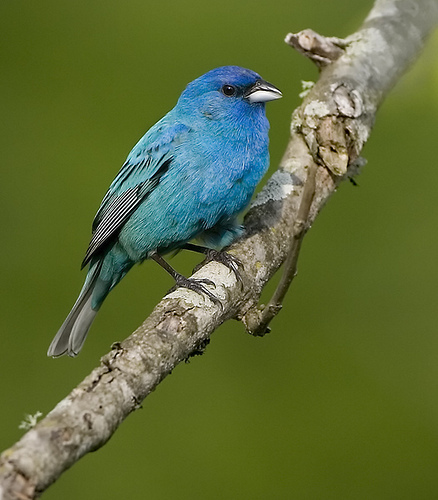

Indigo Bunting

¡Descubre al hermoso Indigo Bunting!
- ¡Bienvenido al mundo del Indigo Bunting, un ave con colores asombrosos!
- Su nombre científico es Passerina cyanea, pero puedes llamarlos "Indigo Buntings". ¡Un nombre colorido, verdad?
- Los Indigo Buntings son conocidos por sus plumajes azules brillantes, ¡como pequeñas joyas voladoras en el cielo! 🐦🌈
- Aunque no son nativos de las Islas Galápagos, podrías tener la suerte de avistarlos durante sus migraciones. ¡Imagina ver esos colores mientras exploras la naturaleza!
- ¡Sorpresa! A pesar de su pequeño tamaño, los Indigo Buntings tienen un canto melodioso que alegra cualquier día.
- Es esencial proteger a estas aves y su entorno para que todos podamos disfrutar de su belleza. ¡Espero que te maravilles con la magia de los Indigo Buntings!
¡Descubre al Indigo Bunting!
- ¡Bienvenido al mundo del Indigo Bunting, un ave con colores asombrosos!
- Nombre Científico: Passerina cyanea (Indigo Bunting)
- Los Indigo Buntings son aves pequeñas pero deslumbran con sus plumajes azules vibrantes, ¡una maravilla para la vista!
- Estado de Conservación: Preocupación Menor, pero es crucial preservar su hábitat para mantener su belleza en la naturaleza.
- ¿Dónde verlos? Aunque no son nativos de las Islas Galápagos, podrías avistarlos durante sus migraciones, especialmente en áreas con vegetación.
- ¡Curiosidad turística! A pesar de su tamaño, los Indigo Buntings tienen un canto encantador que agrega música a la naturaleza circundante.
- Recuerda disfrutar de estas aves desde una distancia respetuosa para no perturbar su rutina diaria. ¡Disfruta explorando el mundo del Indigo Bunting!
Información para biólogos:
- Nombre Científico: Passerina cyanea (Indigo Bunting)
- Estado de Conservación: Preocupación Menor
- Distribución Geográfica: Amplia distribución en América del Norte, migratorio; no nativo de las Islas Galápagos
- Hábitat: Bosques, áreas con arbustos y vegetación densa
- Origen: No nativo de las Islas Galápagos; migratorio y ocasionalmente avistado durante migraciones
- Presencia en el Hábitat: Pueden avistarse ocasionalmente durante migraciones
- Dieta: Semillas, insectos, bayas
- Peso: Alrededor de 13 g (puede variar según la región)
- Nidificación: Construyen nidos en arbustos o árboles bajos
- Migración: Viajan largas distancias entre sus áreas de reproducción y alimentación
- Nombres Relacionados: Blue Canary, Blue Linnet